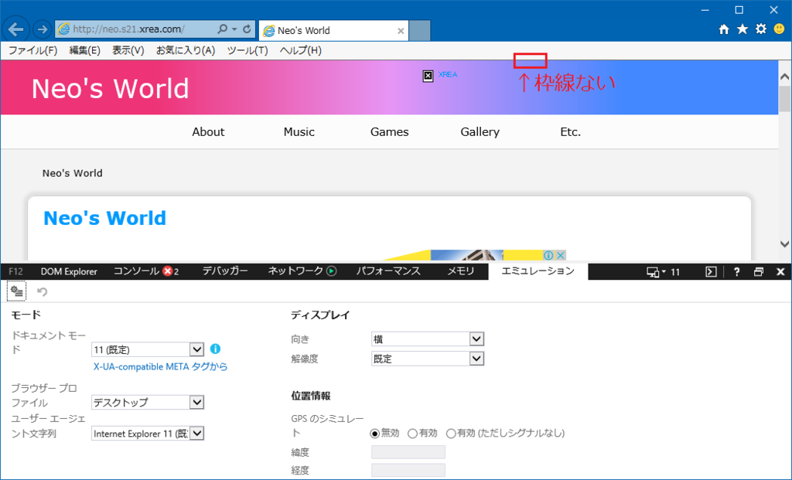
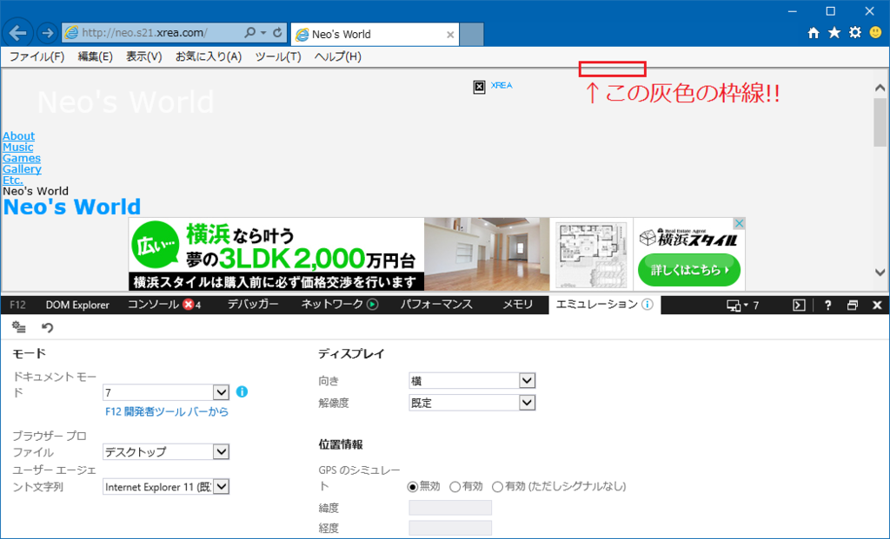

IE11 で互換表示したときに出る灰色の枠線
IE11 で IE7 エミュレートにしたりすると、ページを表示する領域全体を灰色の枠線が囲んでいる。
これが通常の Edge モード表示。

次に、IE7 エミュレートを選択した状態。

ページのフチに、2px か 3px 程度の灰色の border が出ているのが分かるだろうか。
…いや、だから何というワケではないのだが、これって何で出てるんだろうか、と。
調べてみたら、この事象自体は認知されているものの、みんな気にしていないみたい。
- 参考 : ブラウザの上と左右の枠について - マイクロソフト コミュニティ
「互換表示にすると出ますね」という回答だけ。 - 参考 : css - IE strange border - Stack Overflow
「meta 要素で Edge モードにすると出なくなるよ」程度の回答。 - 参考 : Gray border (2 or 3 pixel) around html page (inside browser window) in IE7 only. - Weaver Themes Support Forum
「<html>要素より外側にあるっぽい？」的な回答のみ。
以下のサイトがもう少し詳しく触れていた。
A gray 2px page border appears by default on some versions of IE. It can in some cases be changed or removed by setting the
borderproperty of the html element (e.g.,html { border: 0; }).
html { border: 0; } で削除できると書いてあったが、試した限りだとできなかった。
…別に何も困ってないし、「いつまで互換表示モードに頼ってるの」と言われそうだけど (ギョーミーな SIer はこんなもんだよ!!)、気になったので記事にしておく。